Docs for ‘QGIS testing’. Visit http://docs.qgis.org/2.14 for QGIS 2.14 docs and translations.
The Vector Properties Dialog¶
The Layer Properties dialog for a vector layer provides general settings to manage appearance of layer features in the map (symbology, labeling, diagrams), interaction with the mouse (actions, map tips, form design). It also provides information about the layer.
To access the Layer Properties dialog, double-click on a layer in the legend or right-click on the layer and select Properties from the pop-up menu.
Note
Depending on the external plugins you have installed, new tabs may be added to the layer properties dialog. Those are not presented below.
Tip
Switch quickly between different layer representations
Using the Styles ‣ Add combobox at the bottom of the Layer Properties dialog, you can save as many combinations of layer properties settings (symbology, labeling, diagram, fields form, actions...) as you want. Then, simply switch between styles from the context menu of the layer in Layers Panel to automatically get different representations of your data.
General Menu¶
 Use this menu to make general settings for the vector layer.
There are several options available:
Use this menu to make general settings for the vector layer.
There are several options available:
Layer Info¶
- Change the display name of the layer in displayed as
- Define the Layer source of the vector layer
- Define the Data source encoding to define provider-specific options and to be able to read the file
Coordinate Reference System¶
- Specify the coordinate reference system. Here, you can view or change the projection of the specific vector layer.
- Create a Spatial Index (only for OGR-supported formats)
- Update Extents information for a layer
- View or change the projection of the specific vector layer, clicking on Specify ...
Scale dependent visibility¶
You can set the Maximum (inclusive) and Minimum (exclusive)
scale, defining a range of scale in which features will be visible.
Out of this range, they are hidden.
The  Set to current canvas scale button helps
you use the current map canvas scale as boundary of the range visibility.
Set to current canvas scale button helps
you use the current map canvas scale as boundary of the range visibility.
Figure Vector General 1:
General menu in vector layers properties dialog
Query Builder¶
Under the Provider Feature Filter frame, the Query Builder allows you to define a subset of the features in the layer using a SQL-like WHERE clause and to display the result in the main window. As long as the query is active, only the features corresponding to its result are available in the project. The query result can be saved as a new vector layer.
The Query Builder is accessible through the eponym term at the bottom of the General menu in the Layer Properties. Under Feature subset, click on the [Query Builder] button to open the Query builder. For example, if you have a regions layer with a TYPE_2 field, you could select only regions that are borough in the Provider specific filter expression box of the Query Builder. Figure_vector_general_2 shows an example of the Query Builder populated with the regions.shp layer from the QGIS sample data. The Fields, Values and Operators sections help you to construct the SQL-like query.
Figure Vector General 2:
Query Builder
The Fields list contains all attribute columns of the attribute table to be searched. To add an attribute column to the SQL WHERE clause field, double click its name in the Fields list. Generally, you can use the various fields, values and operators to construct the query, or you can just type it into the SQL box.
The Values list lists the values of an attribute table. To list all possible values of an attribute, select the attribute in the Fields list and click the [all] button. To list the first 25 unique values of an attribute column, select the attribute column in the Fields list and click the [Sample] button. To add a value to the SQL WHERE clause field, double click its name in the Values list.
The Operators section contains all usable operators. To add an operator to the SQL WHERE clause field, click the appropriate button. Relational operators ( = , > , ...), string comparison operator (LIKE), and logical operators (AND, OR, ...) are available.
The [Test] button shows a message box with the number of features satisfying the current query, which is useful in the process of query construction. The [Clear] button clears the text in the SQL WHERE clause text field. The [OK] button closes the window and selects the features satisfying the query. The [Cancel] button closes the window without changing the current selection.
QGIS treats the resulting subset acts as if it where the entire layer. For example if you applied the filter above for ‘Borough’, you can not display, query, save or edit Anchorage, because that is a ‘Municipality’ and therefore not part of the subset.
The only exception is that unless your layer is part of a database, using a subset will prevent you from editing the layer.
Style Menu¶
The Style menu provides you with a comprehensive tool for rendering and symbolizing your vector data. You can use tools that are common to all vector data, as well as special symbolizing tools that were designed for the different kinds of vector data. However all types share the following dialog structure: in the upper part, you have a widget that helps you prepare the classification and the symbol to use for features and at the bottom the Layer rendering widget.
Tip
Export vector symbology
You have the option to export vector symbology from QGIS into Google *.kml, *.dxf and MapInfo *.tab files. Just open the right mouse menu of the layer and click on Save As... to specify the name of the output file and its format. In the dialog, use the Symbology export menu to save the symbology either as Feature symbology ‣ or as Symbol layer symbology ‣. If you have used symbol layers, it is recommended to use the second setting.
Features rendering¶
The renderer is responsible for drawing a feature together with the correct symbol. Regardless layer geometry type, there are four common types of renderers: single symbol, categorized, graduated and rule-based. For point layers, there are a point displacement and a heatmap renderers available while polygon layers can also be rendered with the inverted renderer.
There is no continuous color renderer, because it is in fact only a special case of the graduated renderer. The categorized and graduated renderers can be created by specifying a symbol and a color ramp - they will set the colors for symbols appropriately. For each data type (points, lines and polygons), vector symbol layer types are available. Depending on the chosen renderer, the dialog provides different additional sections.
Note
If you change the renderer type when setting the style of a vector layer the settings you made for the symbol will be maintained. Be aware that this procedure only works for one change. If you repeat changing the renderer type the settings for the symbol will get lost.
Single Symbol Renderer¶
The Single Symbol Renderer is used to render all features of the layer using a single user-defined symbol. See The symbol Selector for further information about symbol representation.
{kind=link}
Figure Symbology 1:
Single symbol line properties
Tip
edit symbol directly from layer panel
If in your Layers Panel you have layers with categories defined through
categorized, graduated or rule-based style mode, you can quickly change the
fill color of the symbol of the categories by right-clicking on a category
and choose the color you prefer from a  color wheel menu.
Right-clicking on a category will also give you access to the options Hide
all items, Show all items and Edit symbol.
color wheel menu.
Right-clicking on a category will also give you access to the options Hide
all items, Show all items and Edit symbol.
No Symbols Renderer¶
The No Symbols renderer is a special use case of the Single Symbol renderer as it applies the same rendering to all features. Using this renderer, no symbol will be drawn for features, but labeling, diagrams and other non-symbol parts will still be shown.
{kind=link}
Selections can still be made on the layer in the canvas and selected features will be rendered with a default symbol. Features being edited will also be shown.
This is intended as a handy shortcut for layers which you only want to show labels or diagrams for, and avoids the need to render symbols with totally transparent fill/border to achieve this.
Categorized Renderer¶
The 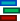 Categorized Renderer is used to render all features from a layer, using an user-defined symbol whose aspect reflects the value of a selected feature’s attribute. The Categorized menu allows you to select:
{kind=link}
- The attribute (using the Column listbox or the
 Set column expression function, see Expressions chapter)
Set column expression function, see Expressions chapter) - The symbol (using the The symbol Selector dialog) which will be used as default for each class
- The range of colors (using the Color ramp listbox) from which color applied to the symbol is selected
Then click on Classify button to create classes from the distinct value of the attribute column. Each class can be disabled unchecking the checkbox at the left of the class name.
To change symbol, value and/or label of the class, just double click on the item you want to change.
Right-click shows a contextual menu to Copy/Paste, Change color, Change transparency, Change output unit, Change symbol width.
The example in figure_symbology_2 shows the category rendering dialog used for the rivers layer of the QGIS sample dataset.
Figure Symbology 2:
Categorized Symbolizing options
Tip
Select and change multiple symbols
The Symbology allows you to select multiple symbols and right click to change color, transparency, size, or width of selected entries.
Tip
Match categories to symbol name
In the [Advanced] menu, under the classes, you can choose one of the two first actions to match symbol name to a category name in your classification. Matched to saved symbols match category name with a symbol name from your Style Manager. Match to symbols from file match category name to a symbol name from an external file.
Graduated Renderer¶
The 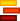 Graduated Renderer is used to render all the features from a layer, using an user-defined symbol whose color or size reflects the assignment of a selected feature’s attribute to a class.
{kind=link}
Like the Categorized Renderer, the Graduated Renderer allows you to define rotation and size scale from specified columns.
Also, analogous to the Categorized Renderer, it allows you to select:
- The attribute (using the Column listbox or the
Set column expression function)
- The symbol (using the Symbol selector dialog)
- The legend format and the precision
- The method to use to change the symbol: color or size
- The colors (using the color Ramp list) if the color method is selected
- The size (using the size domain and its unit
Then you can use the Histogram tab which shows an interactive histogram of the values from the assigned field or expression. Class breaks can be moved or added using the histogram widget.
Note
You can use Statistical Summary panel to get more information on your vector layer. See Statistical Summary Panel.
Back to the Classes tab, you can specify the number of classes and also the mode for classifying features within the classes (using the Mode list). The available modes are:
- Equal Interval: each class has the same size (e.g. values from 0 to 16 and 4 classes, each class has a size of 4);
- Quantile: each class will have the same number of element inside (the idea of a boxplot);
- Natural Breaks (Jenks): the variance within each class is minimal while the variance between classes is maximal;
- Standard Deviation: classes are built depending on the standard deviation of the values;
- Pretty Breaks: Computes a sequence of about n+1 equally spaced nice values which cover the range of the values in x. The values are chosen so that they are 1, 2 or 5 times a power of 10. (based on pretty from the R statistical environment http://astrostatistics.psu.edu/datasets/R/html/base/html/pretty.html)
The listbox in the center part of the Style menu lists the classes together with their ranges, labels and symbols that will be rendered.
Click on Classify button to create classes using the chosen mode. Each classes can be disabled unchecking the checkbox at the left of the class name.
To change symbol, value and/or label of the class, just double click on the item you want to change.
Right-click shows a contextual menu to Copy/Paste, Change color, Change transparency, Change output unit, Change symbol width.
The example in figure_symbology_3 shows the graduated rendering dialog for the rivers layer of the QGIS sample dataset.
Figure Symbology 3:
Graduated Symbolizing options
Tip
Thematic maps using an expression
Categorized and graduated thematic maps can be created using the result
of an expression. In the properties dialog for vector layers, the attribute
chooser is extended with a
Set column expression function.
So you don’t need to write the classification attribute
to a new column in your attribute table if you want the classification
attribute to be a composite of multiple fields, or a formula of some sort.
Proportional Symbol and Multivariate Analysis¶
Proportional Symbol and Multivariate Analysis are not rendering types available from the Style rendering drop-down list. However with the Size Assistant options applied over any of the previous rendering options, QGIS allows you to display your point and line data with such representation.
Creating proportional symbol
Proportional rendering is done by first applying to the layer the Single Symbol Renderer.
Once you set the symbol, at the upper level of the symbol tree, the
 Data-defined override button available beside
Size or Width options (for point or line layers
respectively) provides tool to create proportional symbology for the layer.
An assistant is moreover accessible through the menu
to help you define size expression.
Data-defined override button available beside
Size or Width options (for point or line layers
respectively) provides tool to create proportional symbology for the layer.
An assistant is moreover accessible through the menu
to help you define size expression.
Figure Symbology 4:
Varying size assistant
The assistant lets you define:
- The attribute to represent, using the Field listbox or the
Set column expression function (see Expressions)
- the scale method of representation which can be ‘Flannery’, ‘Surface’ or ‘Radius’
- The minimum and maximum size of the symbol
- The range of values to represent: The down pointing arrow helps you fill automatically these fields with the minimum (or zero) and maximum values returned by the chosen attribute or the expression applied to your data.
- An unique size to represent NULL values.
To the right side of the dialog, you can preview the features representation within a live-update widget. This representation is added to the layer tree in the layer legend and is also used to shape the layer representation in the print composer legend item.
The values presented in the varying size assistant above will set the size ‘Data-defined override’ with:
coalesce(scale_exp(Importance, 1, 20, 2, 10, 0.57), 1)
Creating multivariate analysis
A multivariate analysis rendering helps you evaluate the relationship between two or more variables e.g., one can be represented by a color ramp while the other is represented by a size.
The simplest way to create multivariate analysis in QGIS is to first apply a categorized or graduated rendering on a layer, using the same type of symbol for all the classes. Then, clicking on the symbol [Change] button above the classification frame, you get the The symbol Selector dialog from which, as seen above, you can activate and set the size assistant option either on size (for point layer) or width (for line layer).
Like the proportional symbol, the size-related symbol is added to the layer tree, at the top of the categorized or graduated classes symbols. And both representation are also available in the print composer legend item.
Figure Symbology 5:
Multivariate example
Rule-based rendering¶
The 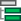 Rule-based Renderer is used to render all the features from a layer, using rule-based symbols whose aspect reflects the assignment of a selected feature’s attribute to a class. The rules are based on SQL statements. The dialog allows rule grouping by filter or scale, and you can decide if you want to enable symbol levels or use only the first-matched rule.
{kind=link}
To create a rule, activate an existing row by double-clicking on it, or
click on ‘+’ and click on the new rule. In the Rule properties dialog,
you can define a label for the rule. Press the  button to open the
expression string builder.
In the Function List, click on Fields and Values to view all
attributes of the attribute table to be searched.
To add an attribute to the field calculator Expression field,
double click on its name in the Fields and Values list. Generally, you
can use the various fields, values and functions to construct the calculation
expression, or you can just type it into the box (see Expressions).
You can create a new rule by copying and pasting an existing rule with the right
mouse button. You can also use the ‘ELSE’ rule that will be run if none of the other
rules on that level matches.
Since QGIS 2.8 the rules appear in a tree hierarchy in the map legend. Just
double-click the rules in the map legend and the Style menu of the layer properties
appears showing the rule that is the background for the symbol in the tree.
button to open the
expression string builder.
In the Function List, click on Fields and Values to view all
attributes of the attribute table to be searched.
To add an attribute to the field calculator Expression field,
double click on its name in the Fields and Values list. Generally, you
can use the various fields, values and functions to construct the calculation
expression, or you can just type it into the box (see Expressions).
You can create a new rule by copying and pasting an existing rule with the right
mouse button. You can also use the ‘ELSE’ rule that will be run if none of the other
rules on that level matches.
Since QGIS 2.8 the rules appear in a tree hierarchy in the map legend. Just
double-click the rules in the map legend and the Style menu of the layer properties
appears showing the rule that is the background for the symbol in the tree.
The example in figure_symbology_5 shows the rule-based rendering dialog for the rivers layer of the QGIS sample dataset.
Figure Symbology 6:
Rule-based Symbolizing options
Point displacement¶
The Point Displacement renderer works to visualize all features of a point layer, even if they have the same location. To do this, the symbols of the points are placed on a displacement circle around one center symbol or on several concentric circles.
{kind=link}
Figure Symbology 7:
Point displacement dialog
Note
You can still render features with other renderer like Single symbol, Graduated, Categorized or Rule-Based renderer using the Renderer drop-down list then the Renderer Settings... button.
Inverted Polygon¶
The Inverted Polygon renderer allows user to define a symbol to fill in outside of the layer’s polygons. As above you can select subrenderers, namely Single symbol, Graduated, Categorized, Rule-Based or 2.5 D renderer.
{kind=link}
Figure Symbology 8:
Inverted Polygon dialog
Heatmap¶
With the Heatmap renderer you can create live dynamic heatmaps for (multi)point layers. You can specify the heatmap radius in pixels, mm or map units, choose and edit a color ramp for the heatmap style and use a slider for selecting a trade-off between render speed and quality. You can also define a maximum value limit and give a weight to points using a field or an expression. When adding or removing a feature the heatmap renderer updates the heatmap style automatically.
{kind=link}
Figure Symbology 9:
Heatmap dialog
2.5 D¶
Using the 2.5 D renderer it’s possible to create
a 2.5 D effect on your layer’s features.
You start by choosing a Height value (in map units). For that
you can use a fixed value, one of your layer’s fields, or an expression. You also
need to choose an Angle (in degrees) to recreate the viewer position
(0° means west, growing in counter clock wise). Use advanced configuration options
to set the Roof Color and Wall Color. If you would like
to simulate solar radiation on the features walls, make sure to check the
 Shade walls based on aspect option. You can also
simulate a shadow by setting a Color and Size (in map
units).
Shade walls based on aspect option. You can also
simulate a shadow by setting a Color and Size (in map
units).
{kind=link}
Figure Symbology 10:
2.5 D dialog
Tip
Using 2.5 D effect with other renderers
Once you have finished setting the basic style on the 2.5 D renderer, you can convert this to another renderer (single, categorized, graduated). The 2.5 D effects will be kept and all other renderer specific options will be available for you to fine tune them (this way you can have for example categorized symbols with a nice 2.5 D representation or add some extra styling to your 2.5 D symbols). To make sure that the shadow and the “building” itself do not interfere with other nearby features, you may need to enable Symbols Levels ( Advanced ‣ Symbol levels...). The 2.5 D height and angle values are saved in the layer’s variables, so you can edit it afterwards in the variables tab of the layer’s properties dialog.
Layer rendering¶
From the Style tab, you can also set some options that invariabily act on all features of the layer:
Layer transparency
 : You can make the underlying layer in
the map canvas visible with this tool. Use the slider to adapt the visibility
of your vector layer to your needs. You can also make a precise definition of
the percentage of visibility in the the menu beside the slider.
: You can make the underlying layer in
the map canvas visible with this tool. Use the slider to adapt the visibility
of your vector layer to your needs. You can also make a precise definition of
the percentage of visibility in the the menu beside the slider.Layer blending mode and Feature blending mode: You can achieve special rendering effects with these tools that you may previously only know from graphics programs. The pixels of your overlaying and underlaying layers are mixed through the settings described in Blending Modes.
Apply paint effects on all the layer features with the Draw Effects button.
Control feature rendering order allows you, using features attributes, to define the z-order in which they shall be rendered. Activate the checkbox and click on the
button beside.
You then get the Define Order dialog in which you:- choose a field or build an expression to apply to the layer features
- set in which order the fetched features should be sorted, i.e. if you choose Ascending order, the features with lower value are rendered under those with upper value.
- define when features returning NULL value should be rendered: first or last.
You can add several rules of ordering. The first rule is applied to all the features in the layer, z-ordering them according to the value returned. Then, for each group of features with the same value (including those with NULL value) and thus same z-level, the next rule is applied to sort its items among them. And so on...
Once the Define Order dialog is applied, a summary of the expression(s) used to control the layer rendering is retranscribed in the textbox beside
Control feature rendering order option.
Figure Layer Rendering 1:
Layer rendering options
Other Settings¶
Symbols levels¶
For renderers that allow stacked symbol layers (only heatmap doesn’t) there is an option to control the rendering order of each symbol’s levels.
For most of the renderers, you can access the Symbols levels option by clicking the [Advanced] button below the saved symbols list and choosing Symbol levels. For the Rule-based rendering the option is directly available through [Symbols levels] button, while for Point displacement renderer the same button is inside the Rendering settings dialog.
To activate symbols levels, select the Enable symbol
levels. Each row will show up a small sample of the combined symbol, its label
and the individual symbols layer divided into columns with a number next to it.
The numbers represent the rendering order level in which the symbol layer
will be drawn. Lower values levels are drawn first, staying at the bottom, while
higher values are drawn last, on top of the others.
Figure Symbols levels 1:
Symbol levels dialog
Note
If symbols levels are deactivated, the complete symbols will be drawn according to their respective features order. Overlapping symbols will simply obfuscate to other below. Besides, similar symbols won’t “merge” with each other.
Figure Symbols levels 2:
Symbol levels activated (A) and deactivated (B) difference
Draw effects¶
In order to improve layer rendering and avoid (or at least reduce)
the resort to other software for final rendering of maps, QGIS provides another
powerful functionality: the  Draw Effects options,
which adds paint effects for customizing the visualization of vector layers.
Draw Effects options,
which adds paint effects for customizing the visualization of vector layers.
The option is available in the Layer Properties –> Style dialog, under the Layer rendering group (applying to the whole layer) or in symbol layer properties (applying to corresponding features). You can combine both usage.
Paint effects can be activated by checking the Draw effects option
and clicking the Customize effects button, that will open
the Effect Properties Dialog (see figure_effects_1). The following
effect types, with custom options are available:
Source: Draws the feature’s original style according to the configuration of the layer’s properties. The transparency of its style can be adjusted.
Figure Effects 1:
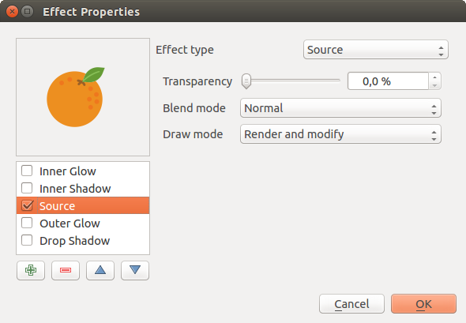Draw Effects: Source dialog
Blur: Adds a blur effect on the vector layer. The options that someone can change are the Blur type (Stack or Gaussian blur), the strength and transparency of the blur effect.
Figure Effects 2:
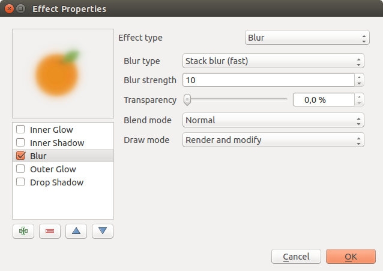Draw Effects: Blur dialog
Colorize: This effect can be used to make a version of the style using one single hue. The base will always be a grayscale version of the symbol and you can use the
 Grayscale to select how to create it
(options are: ‘lightness’, ‘luminosity’ and ‘average’). If
Colorise is selected, it will be possible to mix another color
and choose how strong it should be. You can also control the
Brightness, contrast and
saturation levels of the resulting symbol.
Grayscale to select how to create it
(options are: ‘lightness’, ‘luminosity’ and ‘average’). If
Colorise is selected, it will be possible to mix another color
and choose how strong it should be. You can also control the
Brightness, contrast and
saturation levels of the resulting symbol.Figure Effects 3:
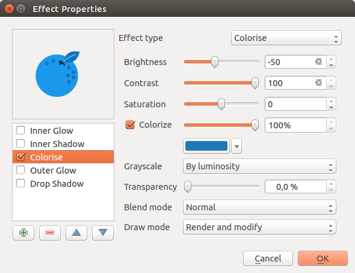Draw Effects: Colorize dialog
Drop Shadow: Using this effect adds a shadow on the feature, which looks like adding an extra dimension. This effect can be customized by changing the offset degrees and radius, determining where the shadow shifts towards to and the proximity to the source object. Drop Shadow also has the option to change the blur radius, the transparency and the color of the effect.
Figure Effects 4:
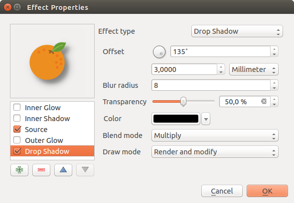Draw Effects: Drop Shadow dialog
Inner Shadow: This effect is similar to the Drop Shadow effect, but it adds the shadow effect on the inside of the edges of the feature. The available options for customization are the same as the Drop Shadow effect.
Figure Effects 5:
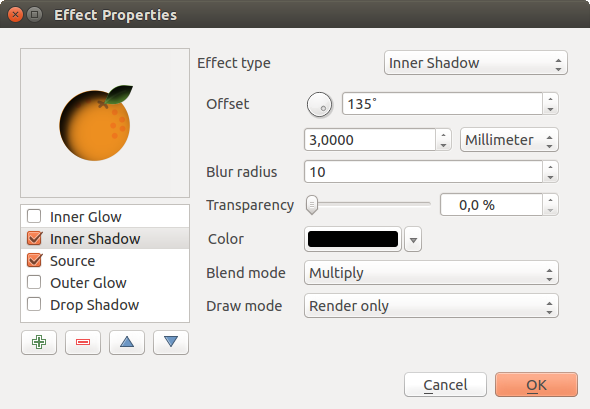Draw Effects: Inner Shadow dialog
Inner Glow: Adds a glow effect inside the feature. This effect can be customized by adjusting the spread (width) of the glow, or the Blur radius. The latter specifies the proximity from the edge of the feature where you want any blurring to happen. Additionally, there are options to customize the color of the glow, with a single color or a color ramp.
Figure Effects 6:
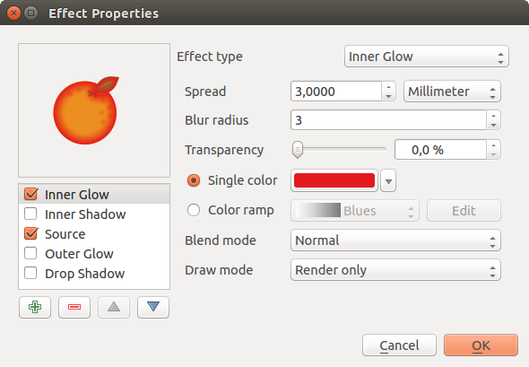Draw Effects: Inner Glow dialog
Outer Glow: This effect is similar to the Inner Glow effect, but it adds the glow effect on the outside of the edges of the feature. The available options for customization are the same as the Inner Glow effect.
Figure Effects 7:
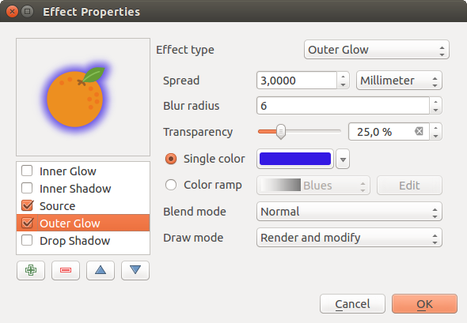Draw Effects: Outer Glow dialog
Transform: Adds the possibility of transforming the shape of the symbol. The first options available for customization are the Reflect horizontal and Reflect vertical, which actually create a reflection on the horizontal and/or vertical axes. The 4 other options are:
- Shear: slants the feature along the x and/or y axis
- Scale: enlarges or minimizes the feature along the x and/or y axis by the given percentage
- Rotation: turns the feature around its center point
- and Translate changes the position of the item based on a distance given on the x and/or the y axis.
Figure Effects 8:
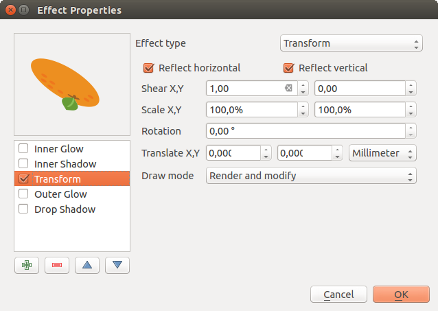Draw Effects: Transform dialog
There are some common options available for all draw effect types. Transparency and Blend mode options work similar to the ones described in Layer rendering and can be used in all draw effects except for the transform one.
One or more draw effects can used at the same time. You activate/deactivate an effect
using its checkbox in the effects list. You can change the selected effect type by
using the Effect type option. You can reorder the effects
using  Move up and
Move up and  Move down
buttons, and also add/remove effects using the
Move down
buttons, and also add/remove effects using the  Add effect
and
Add effect
and  Remove effect buttons.
Remove effect buttons.
There is also a Draw mode option available for
every draw effect, and you can choose whether to render and/or to modify the
symbol. Effects render from top to bottom.’Render only’ mode means that the
effect will be visible while the ‘Modify only’ mode means that the effect will
not be visible but the changes that it applies will be passed to the next effect
(the one immediately below). The ‘Render and Modify’ mode will make the
effect visible and pass any changes to the next effect. If the effect is in the
top of the effects list or if the immediately above effect is not in modify
mode, then it will use the original source symbol from the layers properties
(similar to source).
Labels Menu¶
The  Labels core application provides smart
labeling for vector point, line and polygon layers, and only requires a
few parameters. This application also supports on-the-fly transformed layers.
The following menus are used to configure the labeling of vector layers:
Labels core application provides smart
labeling for vector point, line and polygon layers, and only requires a
few parameters. This application also supports on-the-fly transformed layers.
The following menus are used to configure the labeling of vector layers:
- Text
- Formatting
- Buffer
- Background
- Shadow
- Placement
- Rendering
To label a layer start QGIS and load a vector layer. Activate the layer
in the legend and click on the Layer Labeling Options
icon in the QGIS toolbar menu or activate the Labels tab in the
layer properties dialog.
The first step is to choose the labeling method from the drop-down list. There are four options available:
- No labels
- Show labels for this layer
- Rule-based labeling
- and Discourage other labels from covering features in this layer: allows to set a layer as just an obstacle for other layer’s labels without rendering any labels of its own.
Select the Show labels for this layer option and then select an attribute
column to use for labeling from the Label with drop-down list. Click
if you want to define labels based on
expressions - See Define labels based on expressions.
The following steps describe simple labeling without using the Data defined override functions, which are situated next to the drop-down menus - see Using data-defined override for labeling for an use-case.
Text menu¶
You can define the text style in the Text menu (see Figure_labels_1). Use the Type case option to influence the text rendering. You have the possibility to render the text ‘All uppercase’, ‘All lowercase’ or ‘Capitalize first letter’. Use the Blending Modes to create effects known from graphics programs.
Figure Labels 1:

Smart labeling of vector point layers
Formatting menu¶
In the Formatting menu, you can define a character for a line break in the labels with the ‘Wrap on character’ function. You can format the Line Height and the alignment. For the latter typical values are available plus Follow label placement. When set to this mode, text alignment for labels will be dependent on the final placement of the label relative to the point. E.g., if the label is placed to the left of the point then the label will be right aligned, and if it is placed to the right of the point then the label will be left aligned.
For line vector layers you can include line directions symbols. There are options specifying the type of symbol and the symbol placement.
Use the Formatted numbers option to format the numbers in
an attribute table. Here, decimal places may be inserted.
If you enable this option, three decimal places are initially set by default.
Buffer menu¶
To create a buffer, just activate the Draw text buffer
checkbox in the Buffer menu.
The buffer color is variable. Here, you can also use blend modes.
If the color buffer’s fill checkbox is activated, it will
interact with partially transparent text and give mixed color transparency
results. Turning off the buffer fill fixes that issue (except where the interior
aspect of the buffer’s stroke intersects with the text’s fill) and also allows
you to make outlined text.
Shadow menu¶
Use the Shadow menu for a user-defined Drop shadow.
The drawing of the background is very variable.
Choose between ‘Lowest label component’, ‘Text’, ‘Buffer’ and ‘Background’.
The Offset angle depends on the orientation
of the label. If you choose the Use global shadow checkbox,
then the zero point of the angle is
always oriented to the north and doesn’t depend on the orientation of the label.
You can influence the appearance of the shadow with the Blur radius.
The higher the number, the softer the shadows. The appearance of the drop shadow
can also be altered by choosing a blend mode.
Placement menu¶
Choose the Placement menu for configuring label placement and labeling priority. Note that the placement options differ according to the type of vector layer, namely point, line or polygon.
Placement for point layers¶
With the  Cartographic placement mode,
point labels are generated with best visual relationship with the point feature,
following ideal cartographic placement rules. Labels can be placed
at a set Distance either from the point feature itself
or from the bounds of the symbol used to represent the feature.
The latter option is especially useful when the symbol size isn’t fixed,
e.g. if it’s set by a data defined size or when using different symbols
in a categorized renderer.
Cartographic placement mode,
point labels are generated with best visual relationship with the point feature,
following ideal cartographic placement rules. Labels can be placed
at a set Distance either from the point feature itself
or from the bounds of the symbol used to represent the feature.
The latter option is especially useful when the symbol size isn’t fixed,
e.g. if it’s set by a data defined size or when using different symbols
in a categorized renderer.
By default, placements are prioritised in the following order:
- top right
- top left
- bottom right
- bottom left
- middle right
- middle left
- top, slightly right
- bottom, slightly left.
Placement priority can however be customized or set for an individual feature using a data defined list of prioritised positions. This also allows only certain placements to be used, so e.g. for coastal features you can prevent labels being placed over the land.
The Around point setting places the label in an equal
radius (set in Distance) circle around the feature. The placement of
the label can even be constrained using the Quadrant option.
In the Offset from point placement, labels are placed
at a fixed offset from the point feature.
You can select the Quadrant in which to place your label. You are also
able to set the X and Y offset distances between the points and their labels
and can alter the angle of the label placement with the Rotation setting.
Thus, placement in a selected quadrant with a defined rotation is possible.
Placement for line layers¶
Label options for line layers include Parallel,
 Curved or Horizontal.
For the Parallel and
Curved options, you can set the position to
Above line, On line and
Below line. It’s possible to select several options at once.
In that case, QGIS will look for the optimal label position. For Parallel and
curved placement you can also use the line orientation for the position of the label.
Additionally, you can define a Maximum angle between curved characters when
selecting the Curved option (see Figure_labels_2 ).
Curved or Horizontal.
For the Parallel and
Curved options, you can set the position to
Above line, On line and
Below line. It’s possible to select several options at once.
In that case, QGIS will look for the optimal label position. For Parallel and
curved placement you can also use the line orientation for the position of the label.
Additionally, you can define a Maximum angle between curved characters when
selecting the Curved option (see Figure_labels_2 ).
For all three placement options you can set up a minimum distance for repeating labels. The distance can be in mm or in map units.
Figure Labels 2:

Smart labeling of vector line layers
Placement for polygon layers¶
You can choose one of the following options for placing labels in polygons:
Offset from centroid, Horizontal
(slow), Around centroid,
Free and
Using perimeter.
In the Offset from centroid settings you can specify
if the centroid is of the visible polygon or
whole polygon. That means that either the centroid
is used for the polygon you can see on the map or the centroid is determined for
the whole polygon, no matter if you can see the whole feature on the map.
You can place your label within a specific quadrant, and define offset and rotation.
The Around centroid setting places the label at a
specified distance around the centroid. Again, you can define
visible polygon
or whole polygon for the centroid.
With the Using perimeter settings, you can define a
position and a distance for the label. For the position,
Above line, On line,
Below line and Line orientation
dependent position are possible. You can specify the distance between the label
and the polygon outline, as well as the repeat interval for the label.
Figure Labels 3:

Smart labeling of vector polygon layers
In the priority section you can define the priority with which labels are rendered for all three vector layer types (point, line, polygon). This placement option interact with labels of the other vector layers in the map canvas. If there are labels from different layers in the same location, the label with the higher priority will be displayed and the others will be left out.
Rendering menu¶
In the Rendering menu, you can tune when the labels can be rendered and their interaction with other labels and features.
Under Label options, you find the scale-based and the Pixel size-based visibility settings.
The Label z-index determines the order in which labels are rendered, as well in relation with other feature labels in the layer (using data-defined override expression), as with labels from other layers. Labels with a higher z-index are rendered on top of labels (from any layer) with lower z-index.
Additionally, the logic has been tweaked so that if 2 labels have matching z-indexes, then:
- if they are from the same layer, the smaller label will be drawn above the larger label
- if they are from different layers, the labels will be drawn in the same order as their layers themselves (ie respecting the order set in the map legend).
Note that this setting doesn’t make labels to be drawn below the features from other layers, it just controls the order in which labels are drawn on top of all the layer’s features.
While rendering labels and in order to display readable labels,
QGIS automatically evaluates the position of the labels and can hide some of them
in case of collision. You can however choose to Show all
labels for this layer (including colliding labels) in order to manually fix their placement.
With data-defined expressions in Show label and Always Show you can fine tune which labels should be rendered.
Under Feature options, you can choose to label every part of a multi-part feature and limit the number of features to be labeled. Both line and polygon layers offer the option to set a minimum size for the features to be labeled, using Suppress labeling of features smaller than. For polygon features, you can also filter the labels to show according to whether they completely fit within the feature or not. For line features, you can choose to Merge connected lines to avoid duplicate labels, rendering a quite airy map in conjunction with the Distance or Repeat options in Placement tab.
From the Obstacles frame, you can manage the covering relation between
labels and features. Activate the Discourage labels from
covering features option to decide whether features of the layer should act as
obstacles for any label (including labels from other features in the same layer).
An obstacle is a feature QGIS tries as far as possible to not place labels over.
Instead of the whole layer, you can define a subset of features to use as obstacles,
using the data-defined override control next to the option.
The priority control slider for obstacles allows you to make labels
prefer to overlap features from certain layers rather than others.
A Low weight obstacle priority means that features of the layer are less
considered as obstacles and thus more likely to be covered by labels.
This priority can also be data-defined, so that within the same layer,
certain features are more likely to be covered than others.
For polygon layers, you can choose the type of obstacle features could be by minimising the labels placement:
- over the feature’s interior: avoids placing labels over interior of polygon (prefers placing labels totally outside or just slightly inside polygon)
- or over the feature’s boundary: avoids placing labels over boundary of polygon (prefers placing labels outside or completely inside the polygon). It can be e.g. useful for regional boundary layers, where the features cover an entire area. In this case it’s impossible to avoid placing labels within these features, and it looks much better to avoid placing them over the boundaries between features.
Define labels based on expressions¶
QGIS allows to use expressions to label features. Just click the
icon in the Labels
menu of the properties dialog. In figure_labels_4 you see a sample expression
to label the alaska regions with name and area size, based on the field ‘NAME_2’,
some descriptive text and the function $area in combination with
format_number() to make it look nicer.
Figure Labels 4:

Using expressions for labeling
Expression based labeling is easy to work with. All you have to take care of is that:
- you need to combine all elements (strings, fields and functions) with a string concatenation function such as concat, + or ||. Be aware that in some situations (null or numeric value involved) not all of these tools will fit your need
- strings are written in ‘single quotes’
- fields are written in “double quotes” or without any quote.
Let’s have a look at some examples:
# label based on two fields 'name' and 'place' with a comma as separator
"name" || ', ' || "place"
-> John Smith, Paris
# label based on two fields 'name' and 'place' with other texts
'My name is ' + "name" + 'and I live in ' + "place"
'My name is ' || "name" || 'and I live in ' || "place"
concat('My name is ', name, ' and I live in ', "place")
-> My name is John Smith and I live in Paris
# label based on two fields 'name' and 'place' with other texts
# combining different concatenation functions
concat('My name is ', name, ' and I live in ' || place)
-> My name is John Smith and I live in Paris
-> My name is John Smith # if the field 'place' is NULL
# multi-line label based on two fields 'name' and 'place' with a descriptive text
concat('My name is ', "name", '\n' , 'I live in ' , "place")
-> My name is John Smith
I live in Paris
# label based on a field and the $area function
# to show the place name and its rounded area size in a converted unit.
'The area of ' || "place" || ' has a size of ' || round($area/10000) || ' ha'
-> The area of Paris has a size of 10500 ha
# create a CASE ELSE condition. If the population value in field
# population is <= 50000 it is a town, otherwise a city.
concat('This place is a ', CASE WHEN "population <= 50000" THEN 'town' ELSE 'city' END)
-> This place is a town
As you can see in the expression builder, you have hundreds of functions available to create simple and very complex expressions to label your data in QGIS. See Expressions chapter for more information and examples on expressions.
Using data-defined override for labeling¶
With the data-defined override functions, the settings for the labeling
are overridden by entries in the attribute table.
You can activate and deactivate the function with the right-mouse button.
Hover over the symbol and you see the information about the data-defined override,
including the current definition field.
We now describe an example using the data-defined override function for the
 Move label function (see figure_labels_5 ).
Move label function (see figure_labels_5 ).
- Import lakes.shp from the QGIS sample dataset.
- Double-click the layer to open the Layer Properties. Click on Labels
and Placement. Select Offset from centroid.
- Look for the Data defined entries. Click the icon
to define the field type for the Coordinate. Choose ‘xlabel’ for X
and ‘ylabel’ for Y. The icons are now highlighted in yellow.
- Zoom into a lake.
- Go to the Label toolbar and click the icon.
Now you can shift the label manually to another position (see figure_labels_6).
The new position of the label is saved in the ‘xlabel’ and ‘ylabel’ columns
of the attribute table.
Figure Labels 5:

Labeling of vector polygon layers with data-defined override
Figure Labels 6:

Move labels
Rule-based labeling¶
With Rule-based labeling multiple label configurations can be defined and applied selectively on the base of expression filters, as in Rule-based rendering.
Rules can be set selecting the corresponding option at the top of the Labels panel (see figure_labels_7 ).
Figure Labels 7:
Rule based labeling panel
To create a rule, activate an existing row by double-clicking on it, or click on ‘+’ and click on the new rule. Within the panel you can set the filter expression and the related label configurations.
Figure Labels 8:
Rule settings
Fields Menu¶
 Within the Fields menu, the field attributes of the
selected dataset can be manipulated. The buttons
Within the Fields menu, the field attributes of the
selected dataset can be manipulated. The buttons  New Column and
New Column and  Delete Column
can be used when the dataset is in
Delete Column
can be used when the dataset is in  Editing mode.
Editing mode.
You can rename fields by double-clicking in the fields name (note that you should switch to editing mode to edit the field name). This is only supported for data providers like PostgreSQL, Oracle, Memory layer and some OGR layer depending the OGR data format and version.
You can define some alias to display human readable fields in the form. In this case, you don’t need to switch to editing mode. Alias are saved in project file.
Comments can be added by clicking in the comment field of the column but if you are using a PostgreSQL layer, comment of the column could be the one in the PostgreSQL table if set. Comments are saved in the QGIS project file as for the alias.
Edit Widget
Figure Fields 1:

Dialog to select an edit widget for an attribute column
Within the Fields menu, you also find an edit widget column. This column can be used to define values or a range of values that are allowed to be added to the specific attribute table column. If you click on the [edit widget] button, a dialog opens, where you can define different widgets. These widgets are:
- Checkbox: Displays a checkbox, and you can define what attribute is added to the column when the checkbox is activated or not.
- Classification: Displays a combo box with the values used for classification, if you have chosen ‘unique value’ as legend type in the Style menu of the properties dialog.
- Color: Displays a color button allowing user to choose a color from the color dialog window.
- Date/Time: Displays a line field which can open a calendar widget to enter a date, a time or both. Column type must be text. You can select a custom format, pop-up a calendar, etc.
- Enumeration: Opens a combo box with values that can be used within the columns type. This is currently only supported by the PostgreSQL provider.
- File name: Simplifies the selection by adding a file chooser dialog.
- Hidden: A hidden attribute column is invisible. The user is not able to see its contents.
- Photo: Field contains a filename for a picture. The width and height of the field can be defined.
- Range: Allows you to set numeric values from a specific range. The edit widget can be either a slider or a spin box.
- Relation Reference: This widget lets you embed the feature form of the referenced layer on the feature form of the actual layer. See Creating one to many relations.
- Text edit (default): This opens a text edit field that allows simple text or multiple lines to be used. If you choose multiple lines you can also choose html content.
- Unique values: You can select one of the values already used in the attribute table. If ‘Editable’ is activated, a line edit is shown with autocompletion support, otherwise a combo box is used.
- UUID Generator: Generates a read-only UUID (Universally Unique Identifiers) field, if empty.
- Value map: A combo box with predefined items. The value is stored in the attribute, the description is shown in the combo box. You can define values manually or load them from a layer or a CSV file.
- Value Relation: Offers values from a related table in a combobox. You can select layer, key column and value column. Several options are available to change the standard behaviours: allow null value, order by value, allow multiple selections and use of autocompleter. The forms will display either a drop-down list or a line edit field when completer checkbox is enabled.
- Webview: Field contains a URL. The width and height of the field is variable.
Constraints: Each widget allows to constrain the value filled in the
field. First, you can enable the Not null checkbox to
force the user to fill the value of the column.
You can also setup a custom contraint using an expression, e.g. regexp_match(col0,'A-Za-z') to be sure that the value of the column col0 has only alphabetical letter. Finally, you can add a short description to explain the constraint that will be displayed in the top of the form as a warning message when the value of the field does not match the constraint.
Note
QGIS has an advanced ‘hidden’ option to define your own field widget using python and add it to this impressive list of widgets. It is tricky but it is very well explained in following excellent blog that explains how to create a real time validation widget that can be used like described widgets. See http://blog.vitu.ch/10142013-1847/write-your-own-qgis-form-elements
Tip
Relative Path in widgets
If the path which is selected with the file browser is located in the same directory as the .qgs project file or below, paths are converted to relative paths. This increases portability of a qgs project with multimedia information attached. This is enabled only for File Name, Photo and Web View at this moment.
With the Attribute editor layout, you can now define built-in forms (see figure_fields_2). This is useful for data entry jobs or to identify objects using the option auto open form when you have objects with many attributes. You can create an editor with several tabs and named groups to present the attribute fields.
Choose ‘Drag and drop designer’ and an attribute column. Use the
icon to create a category to insert a tab or a named group (see figure_fields_3).
When creating a new category, QGIS will insert a new tab or named group for the
category in the built-in form.
The next step will be to assign the relevant fields to a selected category
with the icon. You can create more categories and use the
same fields again.
{kind=link}
Other options in the dialog are ‘Autogenerate’ and ‘Provide ui-file’.
- ‘Autogenerate’ just creates editors for all fields and tabulates them.
- The ‘Provide ui-file’ option allows you to use complex dialogs made with the Qt-Designer. Using a UI-file allows a great deal of freedom in creating a dialog. For detailed information, see http://nathanw.net/2011/09/05/qgis-tips-custom-feature-forms-with-python-logic/.
QGIS dialogs can have a Python function that is called when the dialog is opened. Use this function to add extra logic to your dialogs. The form code can be specified in three different ways:
- load from the environment (for example in startup.py or from a plugin)
- load from an external file, a file chooser will appear in that case to allow you to select a Python file from your filesystem
- load from inline code, a Python editor will appear where you can directly type your form code
In all cases you must enter the name of the function that will be called (open in the example below).
An example is (in module MyForms.py):
def open(dialog,layer,feature):
geom = feature.geometry()
control = dialog.findChild(QWidged,"My line edit")
Reference in Python Init Function like so: open
Figure Fields 2:

Dialog to create categories with the Attribute editor layout
Figure Fields 3:
Resulting built-in form with tabs and named groups
Joins Menu¶
 The Joins menu allows you to join a loaded attribute
table to a loaded vector layer. After clicking , the
Add vector join dialog appears. As key columns, you have to define a
join layer you want to connect with the target vector layer.
Then, you have to specify the join field that is common to both the join layer
and the target layer. Now you can also specify a subset of fields from the joined
layer based on the checkbox Choose which fields are joined.
As a result of the join, all information from the join layer and the target layer
are displayed in the attribute table of the target layer as joined information.
If you specified a subset of fields only these fields are displayed in the attribute
table of the target layer.
The Joins menu allows you to join a loaded attribute
table to a loaded vector layer. After clicking , the
Add vector join dialog appears. As key columns, you have to define a
join layer you want to connect with the target vector layer.
Then, you have to specify the join field that is common to both the join layer
and the target layer. Now you can also specify a subset of fields from the joined
layer based on the checkbox Choose which fields are joined.
As a result of the join, all information from the join layer and the target layer
are displayed in the attribute table of the target layer as joined information.
If you specified a subset of fields only these fields are displayed in the attribute
table of the target layer.
QGIS currently has support for joining non-spatial table formats supported by OGR (e.g., CSV, DBF and Excel), delimited text and the PostgreSQL provider (see figure_joins_1).
Figure Joins 1:
Join an attribute table to an existing vector layer
Additionally, the add vector join dialog allows you to:
- Cache join layer in virtual memory
- Create attribute index on the join field
- Choose which fields are joined
- Create a Custom field name prefix
Diagrams Menu¶
 The Diagrams menu allows you to add a graphic overlay to
a vector layer (see figure_diagrams_1).
The Diagrams menu allows you to add a graphic overlay to
a vector layer (see figure_diagrams_1).
The current core implementation of diagrams provides support for:
- pie charts, a circular statistical graphic divided into slices to illustrate numerical proportion. The arc length of each slice is proportional to the quantity it represents,
- text diagrams, a horizontaly divided circle showing statistics values inside
- and histograms.
For each type of diagram, the menu is divided into five tabs:
Attributes¶
Attributes defines which variables to display in the diagram.
Use add item button to select the desired fields into
the ‘Assigned Attributes’ panel. Generated attributes with Expressions
can also be used.
You can move up and down any row with click and drag, sorting how atributes are displayed. You can also change the label in the ‘Legend’ column or the attibute color by double-clicking the item.
This label is the default text displayed in the legend of the print composer or of the layer tree.
Figure Diagrams 1:
Vector properties dialog with diagram menu
Appearance¶
Appearance defines how the diagram looks like. It provides general settings that do not interfere with the statistic values such as:
- the graphic transparency, its outline width and color
- the width of the bar in case of histogram
- the circle background color in case of text diagram, and the font used for texts
- the orientation of the left line of the first slice represented in pie chart. Note that slices are displayed clockwise.
In this menu, you can also manage the diagram visibility:
- by removing diagrams that overlap others or Show all diagrams even if they overlap each other
- by selecting a field with Data defined visibility to precisely tune which diagrams should be rendered
- by setting the scale visibility
Figure Diagrams 2:
Vector properties dialog with diagram menu, Appearance tab
Size¶
Size is the main tab to set how the selected statistics are represented. The diagram size units can be ‘Map Units’ or ‘Millimeters’. You can use :
- Fixed size, an unique size to represent the graphic of all the features, except when displaying histogram
- or Scaled size, based on an expression using layer attributes.
Figure Diagrams 3:

Vector properties dialog with diagram menu, Size tab
Placement¶
Placement helps to define diagram position. According to the layer geometry type, it offers different options for the placement:
- ‘Over the point’ or ‘Around the point’ for point geometry. The latter variable requires a radius to follow.
- ‘Over the line’ or ‘Around the line’ for line geometry. Like point feature, the last variable requires a distance to respect and user can specify the diagram placement relative to the feature (‘above’, ‘on’ and/or ‘below’ the line) It’s possible to select several options at once. In that case, QGIS will look for the optimal position of the diagram. Remember that here you can also use the line orientation for the position of the diagram.
- ‘Over the centroid’, ‘Around the centroid’ (with a distance set), ‘Perimeter’ and anywhere ‘Inside polygon’ are the options for polygon features.
The diagram can also be placed using feature data by filling the X and Y fields with an attribute of the feature.
The placement of the diagrams can interact with the labeling, so you can detect and solve position conflicts between diagrams and labels by setting the Priority slider or the z-index value.
Figure Diagrams 4:
Vector properties dialog with diagram menu, Placement tab
Options¶
The Options tab has settings only in case of histogram. You can choose whether the bar orientation should be ‘Up’, ‘Down’, ‘Right’ and ‘Left’.
Tip
Switch quickly between diagrams
Given that almost all the settings above are common to the different types of diagram, when designing your diagram, you can easily change the diagram type and check which one is more appropriate to your data without any loss.
Case Study¶
We will demonstrate an example and overlay on the Alaska boundary layer a text diagram showing temperature data from a climate vector layer. Both vector layers are part of the QGIS sample dataset (see section Sample Data).
- First, click on the
 Load Vector icon, browse
to the QGIS sample dataset folder, and load the two vector shape layers
alaska.shp and climate.shp.
Load Vector icon, browse
to the QGIS sample dataset folder, and load the two vector shape layers
alaska.shp and climate.shp. - Double click the climate layer in the map legend to open the Layer Properties dialog.
- Click on the Diagrams menu, activate Show
diagrams for this layer, and from the Diagram type
combo box, select ‘Text diagram’.
- In the Appearance tab, we choose a light blue as background color, and in the Size tab, we set a fixed size to 18 mm.
- In the Position tab, placement could be set to ‘Around Point’.
- In the diagram, we want to display the values of the three columns
T_F_JAN, T_F_JUL and T_F_MEAN. So, in the Attributes tab
first select T_F_JAN and click the button, then repeat with
T_F_JUL and finally T_F_MEAN.
- Now click [Apply] to display the diagram in the QGIS main window.
- You can adapt the chart size in the Size tab. Activate the
Scaled size and set the size of the diagrams on
the basis of the maximum value of an attribute and the
Size option.
If the diagrams appear too small on the screen, you can activate the
Increase size of small diagrams checkbox and define
the minimum size of the diagrams.
- Change the attribute colors by double clicking on the color values in the Assigned attributes field. Figure_diagrams_5 gives an idea of the result.
- Finally, click [Ok].
Figure Diagrams 5:

Diagram from temperature data overlayed on a map
Remember that in the Position tab, a Data
defined position of the diagrams is possible. Here, you can use attributes
to define the position of the diagram.
You can also set a scale-dependent visibility in the Appearance tab.
The size and the attributes can also be an expression.
Use the button to add an expression.
See Expressions chapter for more information and example.
Using data-defined override¶
As mentioned above, you can use some custom data-defined to tune the diagrams rendering:
- position in Placement tab by filling X and Y fields
- visibility in Appearance tab by filling the Visibility field
Some tools to manipulate these notions are available through the label toolbar, but only if the corresponding data-defined is indicated (otherwise, buttons are disabled).
Figure Diagrams 6:
Diagram/Label toolbar
These tools allow to specifically work on each diagram to:
- 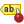 Pin/Unpin Labels And Diagrams that has data-defined position. By clicking or draging an area, you pin diagram(s). If you click or drag an area holding Shift, diagram(s) are unpinned. Finally, you can also click or drag an area holding Ctrl to toggle the pin status of diagram(s).
- 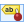 Highlight Pinned Labels And Diagrams. If the vector layer of the diagram is editable, then the highlighting is green, otherwise it’s blue.
- Move Label And Diagram that has data-defined
position. You just have to drag the diagram to the desired place.
- 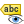 Show/Hide Labels And Diagrams that has data-defined visbility. If you click or drag an area holding Shift, then diagram(s) are hidden. When a diagram is hidden, you just have to click or drag an area around the feature’s point to restore the chart.
{kind=link}
{kind=link}
{kind=link}
Actions Menu¶
 QGIS provides the ability to perform an action based on the attributes
of a feature. This can be used to perform any number of actions, for example,
running a program with arguments built from the attributes of a feature or
passing parameters to a web reporting tool.
QGIS provides the ability to perform an action based on the attributes
of a feature. This can be used to perform any number of actions, for example,
running a program with arguments built from the attributes of a feature or
passing parameters to a web reporting tool.
Figure Actions 1:

Overview action dialog with some sample actions
Actions are useful when you frequently want to run an external application or view a web page based on one or more values in your vector layer. They are divided into six types and can be used like this:
- Generic, Mac, Windows and Unix actions start an external process.
- Python actions execute a Python expression.
- Generic and Python actions are visible everywhere.
- Mac, Windows and Unix actions are visible only on the respective platform (i.e., you can define three ‘Edit’ actions to open an editor and the users can only see and execute the one ‘Edit’ action for their platform to run the editor).
There are several examples included in the dialog. You can load them by clicking on [Add default actions]. One example is performing a search based on an attribute value. This concept is used in the following discussion.
Defining Actions¶
Attribute actions are defined from the vector Layer Properties dialog. To define an action, open the vector Layer Properties dialog and click on the Actions menu. Go to the Action properties. Select ‘Generic’ as type and provide a descriptive name for the action. The action itself must contain the name of the application that will be executed when the action is invoked. You can add one or more attribute field values as arguments to the application. When the action is invoked, any set of characters that start with a % followed by the name of a field will be replaced by the value of that field. The special characters %% will be replaced by the value of the field that was selected from the identify results or attribute table (see using_actions below). Double quote marks can be used to group text into a single argument to the program, script or command. Double quotes will be ignored if preceded by a backslash.
If you have field names that are substrings of other field names (e.g., col1 and col10), you should indicate that by surrounding the field name (and the % character) with square brackets (e.g., [%col10]). This will prevent the %col10 field name from being mistaken for the %col1 field name with a 0 on the end. The brackets will be removed by QGIS when it substitutes in the value of the field. If you want the substituted field to be surrounded by square brackets, use a second set like this: [[%col10]].
Using the Identify Features tool, you can open the Identify Results dialog. It includes a (Derived) item that contains information relevant to the layer type. The values in this item can be accessed in a similar way to the other fields by proceeding the derived field name with (Derived).. For example, a point layer has an X and Y field, and the values of these fields can be used in the action with %(Derived).X and %(Derived).Y. The derived attributes are only available from the Identify Results dialog box, not the Attribute Table dialog box.
Two example actions are shown below:
- konqueror http://www.google.com/search?q=%nam
- konqueror http://www.google.com/search?q=%%
In the first example, the web browser konqueror is invoked and passed a URL to open. The URL performs a Google search on the value of the nam field from our vector layer. Note that the application or script called by the action must be in the path, or you must provide the full path. To be certain, we could rewrite the first example as: /opt/kde3/bin/konqueror http://www.google.com/search?q=%nam. This will ensure that the konqueror application will be executed when the action is invoked.
The second example uses the %% notation, which does not rely on a particular field for its value. When the action is invoked, the %% will be replaced by the value of the selected field in the identify results or attribute table.
Using Actions¶
Actions can be invoked from either the Identify Results dialog,
an Attribute Table dialog or from Run Feature Action
(recall that these dialogs can be opened by clicking  Identify Features or
Identify Features or  Open Attribute Table or
Run Feature Action). To invoke an action, right
click on the record and choose the action from the pop-up menu. Actions are
listed in the popup menu by the name you assigned when defining the action.
Click on the action you wish to invoke.
Open Attribute Table or
Run Feature Action). To invoke an action, right
click on the record and choose the action from the pop-up menu. Actions are
listed in the popup menu by the name you assigned when defining the action.
Click on the action you wish to invoke.
{kind=link}
If you are invoking an action that uses the %% notation, right-click on the field value in the Identify Results dialog or the Attribute Table dialog that you wish to pass to the application or script.
Here is another example that pulls data out of a vector layer and inserts
it into a file using bash and the echo command (so it will only work on
 or perhaps
or perhaps  ). The layer in question has fields for a species name
taxon_name, latitude lat and longitude long. We would like to be
able to make a spatial selection of localities and export these field values
to a text file for the selected record (shown in yellow in the QGIS map area).
Here is the action to achieve this:
). The layer in question has fields for a species name
taxon_name, latitude lat and longitude long. We would like to be
able to make a spatial selection of localities and export these field values
to a text file for the selected record (shown in yellow in the QGIS map area).
Here is the action to achieve this:
bash -c "echo \"%taxon_name %lat %long\" >> /tmp/species_localities.txt"
After selecting a few localities and running the action on each one, opening the output file will show something like this:
Acacia mearnsii -34.0800000000 150.0800000000
Acacia mearnsii -34.9000000000 150.1200000000
Acacia mearnsii -35.2200000000 149.9300000000
Acacia mearnsii -32.2700000000 150.4100000000
As an exercise, we can create an action that does a Google search on the lakes layer. First, we need to determine the URL required to perform a search on a keyword. This is easily done by just going to Google and doing a simple search, then grabbing the URL from the address bar in your browser. From this little effort, we see that the format is http://google.com/search?q=qgis, where QGIS is the search term. Armed with this information, we can proceed:
Make sure the lakes layer is loaded.
Open the Layer Properties dialog by double-clicking on the layer in the legend, or right-click and choose Properties from the pop-up menu.
Click on the Actions menu.
Enter a name for the action, for example Google Search.
For the action, we need to provide the name of the external program to run. In this case, we can use Firefox. If the program is not in your path, you need to provide the full path.
Following the name of the external application, add the URL used for doing a Google search, up to but not including the search term: http://google.com/search?q=
The text in the Action field should now look like this: firefox http://google.com/search?q=
Click on the drop-down box containing the field names for the lakes layer. It’s located just to the left of the [Insert Field] button.
From the drop-down box, select ‘NAMES’ and click [Insert Field].
Your action text now looks like this:
firefox http://google.com/search?q=%NAMES
To finalize the action, click the [Add to action list] button.
This completes the action, and it is ready to use. The final text of the action should look like this:
firefox http://google.com/search?q=%NAMES
We can now use the action. Close the Layer Properties dialog and zoom in to an area of interest. Make sure the lakes layer is active and identify a lake. In the result box you’ll now see that our action is visible:
Figure Actions 2:

Select feature and choose action
When we click on the action, it brings up Firefox and navigates to the URL http://www.google.com/search?q=Tustumena. It is also possible to add further attribute fields to the action. Therefore, you can add a + to the end of the action text, select another field and click on [Insert Field]. In this example, there is just no other field available that would make sense to search for.
You can define multiple actions for a layer, and each will show up in the Identify Results dialog.
You can also invoke actions from the attribute table by selecting a row and right-clicking, then choosing the action from the pop-up menu.
There are all kinds of uses for actions. For example, if you have a point layer containing locations of images or photos along with a file name, you could create an action to launch a viewer to display the image. You could also use actions to launch web-based reports for an attribute field or combination of fields, specifying them in the same way we did in our Google search example.
We can also make more complex examples, for instance, using Python actions.
Usually, when we create an action to open a file with an external application, we can use absolute paths, or eventually relative paths. In the second case, the path is relative to the location of the external program executable file. But what about if we need to use relative paths, relative to the selected layer (a file-based one, like a shapefile or SpatiaLite)? The following code will do the trick:
command = "firefox"
imagerelpath = "images_test/test_image.jpg"
layer = qgis.utils.iface.activeLayer()
import os.path
layerpath = layer.source() if layer.providerType() == 'ogr'
else (qgis.core.QgsDataSourceURI(layer.source()).database()
if layer.providerType() == 'spatialite' else None)
path = os.path.dirname(str(layerpath))
image = os.path.join(path,imagerelpath)
import subprocess
subprocess.Popen( [command, image ] )
We just have to remember that the action is one of type Python and the command and imagerelpath variables must be changed to fit our needs.
But what about if the relative path needs to be relative to the (saved) project file? The code of the Python action would be:
command="firefox"
imagerelpath="images/test_image.jpg"
projectpath=qgis.core.QgsProject.instance().fileName()
import os.path
path=os.path.dirname(str(projectpath)) if projectpath != '' else None
image=os.path.join(path, imagerelpath)
import subprocess
subprocess.Popen( [command, image ] )
Another Python action example is the one that allows us to add new layers to the project. For instance, the following examples will add to the project respectively a vector and a raster. The names of the files to be added to the project and the names to be given to the layers are data driven (filename and layername are column names of the table of attributes of the vector where the action was created):
qgis.utils.iface.addVectorLayer('/yourpath/[% "filename" %].shp',
'[% "layername" %]', 'ogr')
To add a raster (a TIF image in this example), it becomes:
qgis.utils.iface.addRasterLayer('/yourpath/[% "filename" %].tif',
'[% "layername" %]')
Display Menu¶
 This menu is specifically created for map tips: display a message in
the map canvas when hovering over a feature of the active layer.
This message can either be the value of a Field
or a more complex and full HTML text mixing fields,
expressions and html tags (multiline, fonts, images,
hyperlink ...).
This menu is specifically created for map tips: display a message in
the map canvas when hovering over a feature of the active layer.
This message can either be the value of a Field
or a more complex and full HTML text mixing fields,
expressions and html tags (multiline, fonts, images,
hyperlink ...).
To activate Map Tips, select the menu option View ‣ Map Tips
or click on the Map Tips icon. Map tip is a cross-session feature
meaning that once activated, it stays on and apply to any set layer in any project,
even in future QGIS sessions until it’s toggled off.
Figure Display 1 and 2 show an example of HTML code and how it behaves in map canvas.
Figure Display 1:
HTML code for map tip
Figure Display 2:

Map tip made with HTML code
Rendering Menu¶
QGIS offers support for on-the-fly feature generalisation. This can
improve rendering times when drawing many complex features at small scales.
This feature can be enabled or disabled in the layer settings using the
Simplify geometry option. There is also a global
setting that enables generalisation by default for newly added layers (see
section Options).
Figure Rendering 1:

Layer Geometry Simplification dialog
Note
Feature generalisation may introduce artefacts into your rendered output in some cases. These may include slivers between polygons and inaccurate rendering when using offset-based symbol layers.
While rendering extremely detailed layers (e.g. polygon layers with a huge number of nodes), this can cause composer exports in PDF/SVG format to be huge as all nodes are included in the exported file. This can also make the resultant file very slow to work with/open in other programs.
Checking Force layer to render as raster forces these
layers to be rasterised so that the exported files won’t have to include all
the nodes contained in these layers and the rendering is therefore sped up.
You can also do this by forcing the composer to export as a raster, but that is an all-or-nothing solution, given that the rasterisation is applied to all layers.
Metadata Menu¶
 The Metadata menu consists of Description,
Attribution, MetadataURL, LegendUrl
and Properties sections.
The Metadata menu consists of Description,
Attribution, MetadataURL, LegendUrl
and Properties sections.
In the Properties section, you get general information about the layer, including specifics about the type and location, number of features, feature type, and editing capabilities. The Extents table provides you with information on the layer extent and the Layer Spatial Reference System, which is information about the CRS of the layer. This can provide a quick way to get useful information about the layer.
Additionally, you can add or edit a title and abstract for the layer in the Description section. It’s also possible to define a Keyword list here. These keyword lists can be used in a metadata catalogue. If you want to use a title from an XML metadata file, you have to fill in a link in the DataUrl field.
Use Attribution to get attribute data from an XML metadata catalogue.
In MetadataUrl, you can define the general path to the XML metadata catalogue. This information will be saved in the QGIS project file for subsequent sessions and will be used for QGIS server.
In the LegendUrl section, you can provide the url of a legend image in the url field. You can use the Format drop-down option to apply the appropriate format of the image. Currently png, jpg and jpeg image formats are supported.
Figure Metadata 1:

Metadata menu in vector layers properties dialog
Save and Share Layer Properties¶
Managing Custom Styles¶
When a layer is added to map canvas, QGIS uses by default a random symbol/color to render its features. You can however set a default symbol in Project ‣ Properties ‣ Default styles that will be applied to each newly added layer according to its geometry type.
But, most of the time, you’d prefer to have a custom and more complex style that can be applied automatically or manually (with less efforts) to the layers. You can achieve this goal using the Style combobox at the bottom of the Layer Properties dialog. This combobox provides you with functions to create, load and manage styles.
A style stores any information set in the layer properties dialog to render or interact with the features (including symbology, labeling, action, diagram... settings).
Figure Vector Properties 10:
Style combobox options
By default, the style applied to a loaded layer is named default. Once you
have got the ideal and appropriate rendering for your layer, you can save it by
clicking the Style combobox and choose:
- Rename Current: The active style gets renamed and updated with the current options
- Add: A new style is created using the current options. By default, it will be saved in the QGIS project file. See below to save the style in a database.
At the bottom of the Style drop-down list, you see the styles set for the layer and the active one is checked. Once you have more than one style defined for a layer, a Remove Current option can help you delete those you no longer want.
Note that each time you validate the layer properties dialog, the active style is updated with the changes you’ve done.
You can create as many styles as you wish for a layer but only one can be active at a time. Combined to layer visibility preset, this offers a quick and powerful way to manage complex projects with few layers (no need to duplicate any layer in the map legend).
Tip
Manage styles from layer context menu
Right-click on the layer in Layers Panel to add, rename or remove layer style. You can also edit feature symbols.
Storing Style in a File or a Database¶
While these styles are saved inside the project and can be copied and pasted from
layer to layer in the project, it’s also possible to save them outside the project
so that they can be loaded in another project.
Clicking the Style ‣ Save Style
saves the symbol as a QGIS layer style file (.qml) or SLD file (.sld).
SLDs can be exported from any type of renderer – single symbol,
categorized, graduated or rule-based – but when importing an SLD, either a
single symbol or rule-based renderer is created.
That means that categorized or graduated styles are converted to rule-based.
If you want to preserve those renderers, you have to stick to the QML format.
On the other hand, it can be very handy sometimes to have this easy way of
converting styles to rule-based.
If the datasource of the layer is a database (PostGIS, MSSQL, Oracle or Spatialite), you can also save your layer style inside a table (named layer_styles) of the database. Just click on Save Style combobox and choose Save in database item then fill in the dialog to define a style name, add a description, an ui file if applicable and check if the style is the default style. You can add several style in the database. However each table can have only one default style.
Note
You can only save your style in database if the layer come from such database. You can’t mix databases (layer in Oracle and style in MSSQL for instance).
Note
Restore and Save default style
You can save the current style as the default style for the layer or overwrite the current style by the default one for current layer.
Interface could ask you from which (or to which) database you want to take (or save) the default style in case a database is used. For instance, if layer comes from PostgreSQL database, you can save the style in this database. You can restore the default style either from this database or from the local database.
Local database is a SQLite database in the ~/.qgis2/ directory (where QGIS stores its local settings).
See also the tip in Some details about PostgreSQL layers for more information on backup of PostGIS database with layers and styles saved by QGIS.
When loading a layer in QGIS, if a default style already exists for this layer, QGIS will load the layer and its style. After you modified the layer style, you can Save as Default, creating a new style that becomes the default one or Restore Default style if you’re not satisfied.
Figure Vector Properties 2:

Save Style in database Dialog
Tip
Quickly share a layer style within the project
You can also share layer style within a project without importing a file or database style: right-click on the layer in the Layers Panel and, from the Styles combobox , copy the style of a layer and paste it to a group or a selection of layers: the style is applied to all the layers that are of the same type (vector vs raster) as the original layer and, in case of vector, have the same geometry type (point, line or polygon).